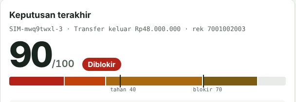

Tiga jawaban, satu permintaan
Skor 0–100 dijumlahkan dari aturan yang terpicu. Dari skor itu keluar satu dari tiga keputusan.
ALLOW · skor < 40Lolos
Transaksi dijalankan. Setoran tunai Rp500 juta ke atas tetap otomatis dibuatkan LTKT.
REVIEW · skor 40–69Ditahan
Dana ditahan dan kasus dibuka untuk analis. Kalau dilepas, transaksinya berjalan.
BLOCK · skor ≥ 70Diblokir
Transaksi ditolak. Daftar pantauan dan rekening yang dibekukan langsung diblokir berapa pun skornya.

Aturan yang bisa dibaca auditor
Tidak ada kotak hitam. Setiap aturan punya poin tetap dan menulis kalimat penjelasannya sendiri.
| Aturan | Poin | Kapan terpicu |
|---|---|---|
| WATCHLIST | blokir | Rekening lawan ada di daftar pantauan (simulasi DTTOT) |
| STRUCTURING | 45 | Tiga setoran tunai atau lebih dalam 24 jam, masing-masing di bawah batas lapor, totalnya mencapai batas |
| VELOCITY | 25 / 40 | 5 / 10 transaksi keluar dalam 10 menit |
| PASS_THROUGH | 35 | Dana masuk lalu langsung keluar dalam 1 jam, pola rekening penampung |
| UNUSUAL_AMOUNT | 25 | Lebih dari 5× rata-rata transaksi keluar 30 hari |
| NEW_ACCOUNT | 20 | Rekening berumur kurang dari 7 hari mengirim Rp10 juta ke atas |
| INCOME_MISMATCH | 20 | Dana keluar 30 hari lebih dari 3× penghasilan yang dilaporkan |
| NEW_COUNTERPARTY · NEW_DEVICE | 15 | Penerima atau perangkat yang belum pernah dipakai, untuk nominal besar |
| LARGE_AMOUNT · JUST_BELOW_REPORT | 15 | Nominal Rp100 juta ke atas, atau setoran tunai tepat di bawah batas lapor |
| ODD_HOUR · HIGH_RISK_CUSTOMER | 10 | Transaksi besar pukul 00.00–03.59 WIB, atau nasabah berprofil risiko tinggi |
Pengaman di backend
- Prinsip 4 mata
- Hanya analis pemegang kasus yang bisa mengusulkan, hanya supervisor yang bisa menyetujui, dan penyetuju tidak boleh sama dengan pengusul.
- Burst paralel tetap terhitung
- Transaksi satu rekening dinilai bergiliran di bawah kunci rekening. Dua belas transaksi serentak menghasilkan tepat tiga yang ditahan.
- Audit tahan manipulasi
- Setiap entri menyimpan hash entri sebelumnya. Mengubah satu entri lama memutus rantai, dan verifikasi menunjuk entri yang rusak.
- Kredensial dengan satu fungsi
- API key hanya mengirim transaksi, token analis memeriksa, token supervisor menyetujui. Yang disimpan hanya hash-nya.
- Keputusan tidak bisa ditimpa
- ID transaksi yang sama mendapat jawaban pertama. ID sama dengan isi berbeda ditolak.
- LTKM lewat persetujuan
- Laporan transaksi mencurigakan baru dibuat setelah usulan analis disetujui supervisor.
Dipakai lewat API
Konsol web memakai API yang sama dengan sistem core banking. Jalankan di komputer sendiri:
# jalankan server
docker build -t fraud-guard . && docker run -p 8080:8080 fraud-guard
# buat sandbox: dapat apiKey, analystToken, supervisorToken
curl -s -X POST localhost:8080/api/sandbox -H 'Content-Type: application/json' -d '{}'
# kirim transaksi untuk dinilai
curl -s localhost:8080/api/transactions \
-H "Authorization: Bearer $API_KEY" -H 'Content-Type: application/json' \
-d '{"id":"TRX-001","accountNo":"7001002003","type":"TRANSFER_OUT",
"amount":"48000000.00","counterpartyAccount":"7009222222"}'- Java 21
- com.sun.net.httpserver
- Virtual threads
- SHA-256 hash chain
- JUnit 5
- Docker
- GitHub Actions